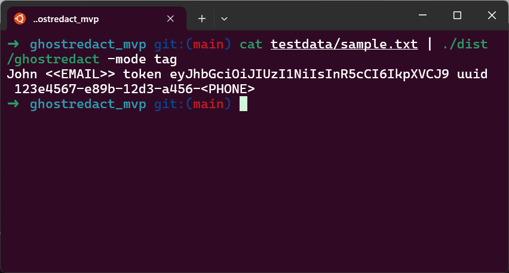

Scrub emails, phones, keys, and card numbers from logs & docs — fast & offline.
Refunds: 7-day, no questions asked
***, [REDACTED:TYPE], or hash.txt, .log, .json, .csv# redact a file
ghostredact --in server.log --out clean.log
# or from stdin
cat dump.txt | ghostredact --style stars > clean.txt